«Buen bistec, el chicharrón, el queso que utilizan es bueno y gran variedad de salsas.»
victor hernandez · Google Maps, Taqueando Centro
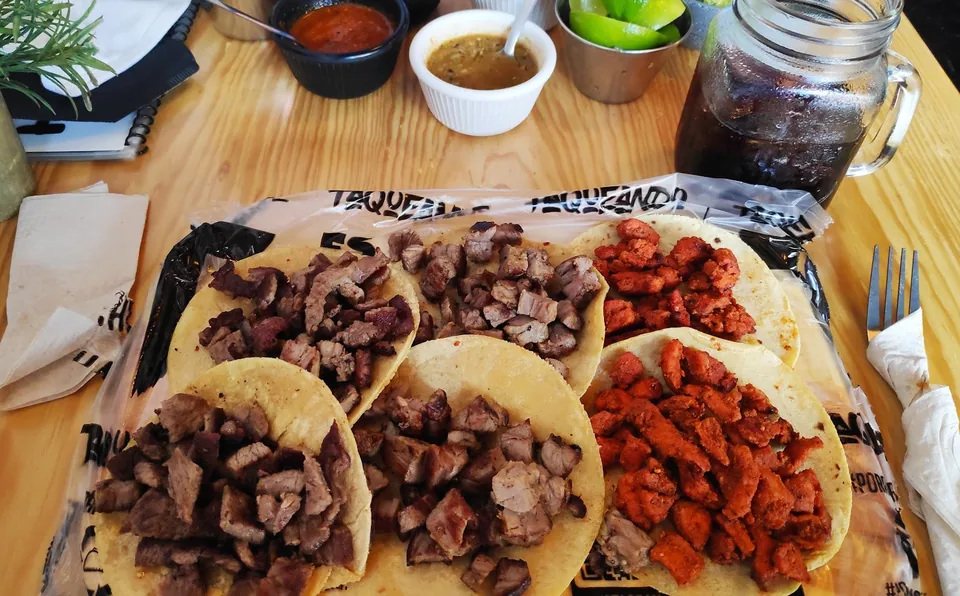
Bistec y pastorTacos en Aguascalientes. Centro, Norte y Sur.
4.6 en Google · 1,234 opiniones en Centro
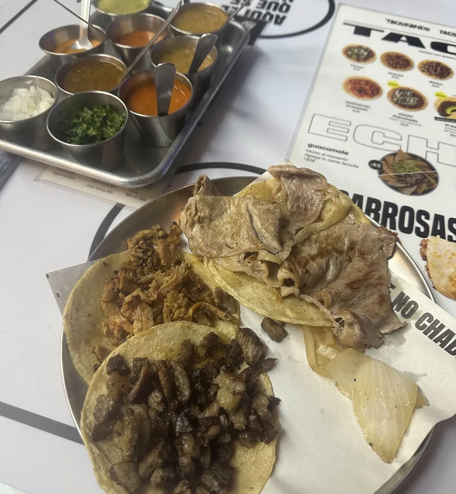
Tacos y salsasPídelos con queso o en volcanes +$10
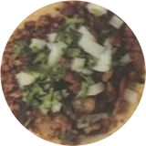
Pastor$28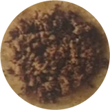
Chorizo$28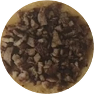
Bistec$30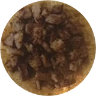
Sirloin$39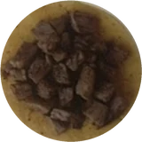
Arrachera$49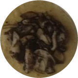
Champiñones$24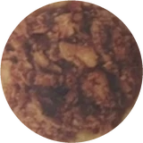
Chicharrón Prensado$26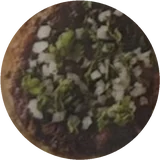
NUEVO Chichi PlanchadaChich. a la plancha$28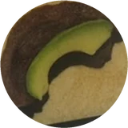
NUEVO El RegioChicharrón de los Romo$59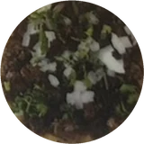
NUEVO BarbachaBarbacoa de Arrachera$59Precios de la carta de Centro. Te confirmamos el vigente por WhatsApp.
En el local también hay burrito de arrachera, quesadillas, gringas y guacamole.
Escríbenos tu pedido por WhatsApp.Toca el + de un taco o empieza aquí:
Te confirmamos precio y disponibilidad por WhatsApp.
4.6
1,234 opiniones en Google, sucursal Centro
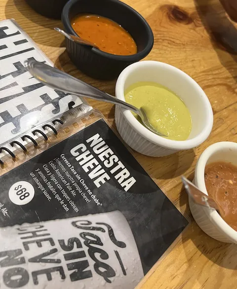
Nuestra cheve«Buen bistec, el chicharrón, el queso que utilizan es bueno y gran variedad de salsas.»
victor hernandez · Google Maps, Taqueando Centro
«Excelente comida, queso en gran cantidad, es una gran opción ya que te llenas sin gastar mucho.»
Troker Hdez · Google Maps, Taqueando Centro
«La comida estuvo deliciosa, la verdad muy bien servida, los precios económicos. Sin duda una excelente opción.»
Rosalba Avelino Antonio · Google Maps, Taqueando Centro
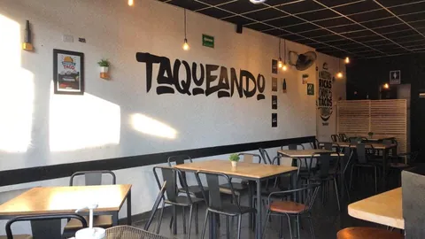
CentroAv. Francisco I. Madero 479, Zona Centro
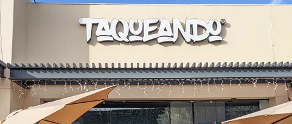
Norte · Plaza Cuatro HojasPlaza Cuatro Hojas · Av. Paseo de las Maravillas 100, Trojes del Pedregal
Plaza Distrito Sur
Dirección y horario: pregúntalos por WhatsApp.
TACOS Y CHEVE 2X1.
Solo sucursal Centro, consumo en restaurante. Aplica restricciones.
Escríbenos tu pedido por WhatsApp o arma tu charola con la carta.
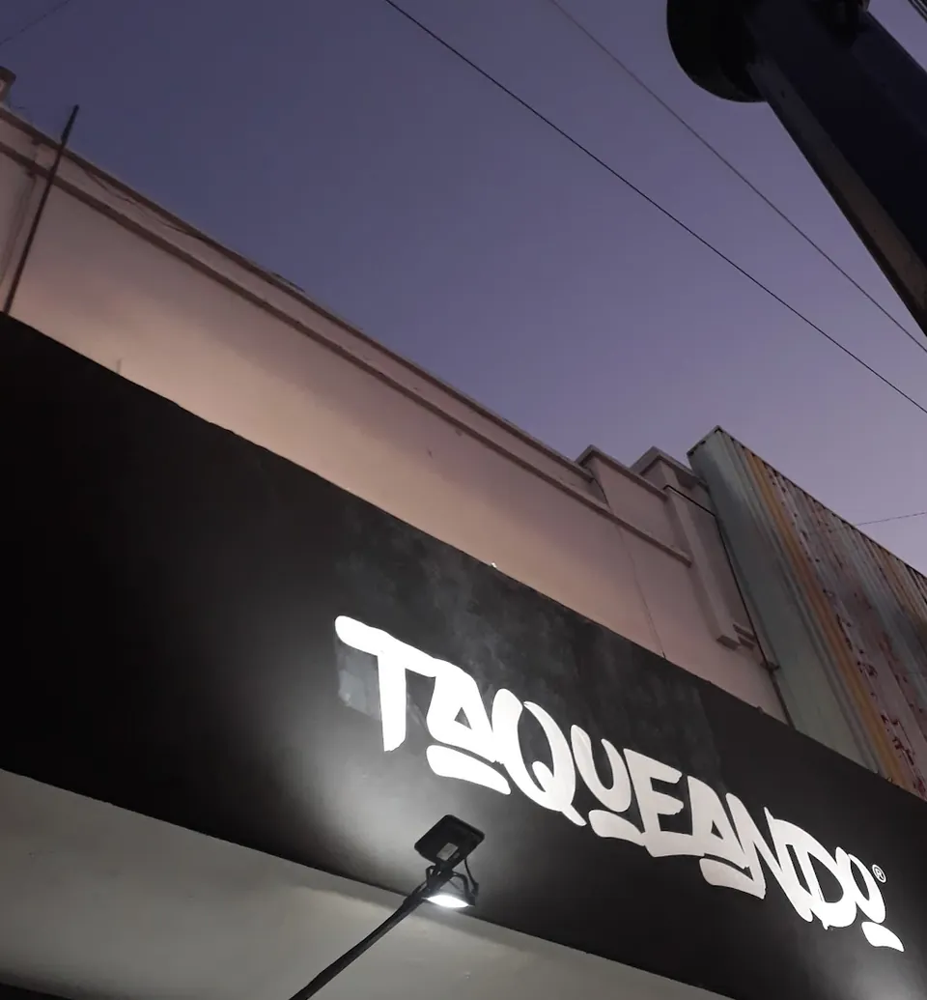
Taco sin cheve no chabe.®